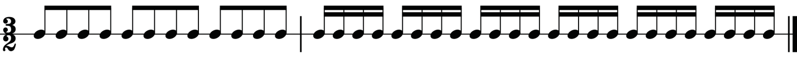
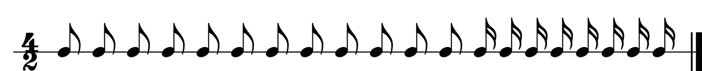
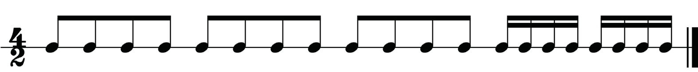
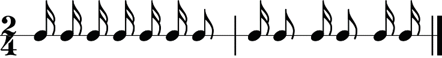
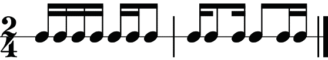
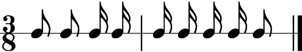
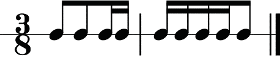
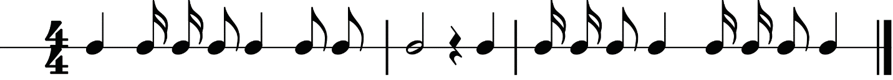
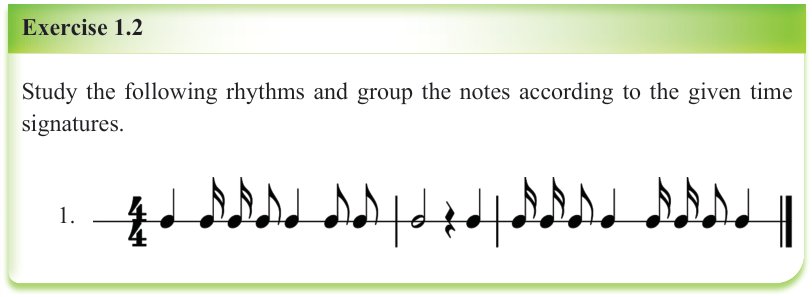

Note that, in some cases, notes of different values such as quavers and semiquavers can be grouped. This is possible if the notes belong to the same beat. Figures 1.43 and 1.44 show examples of how notes of different values can be grouped.

(a)

(b)
Figure 1.43: Ungrouped and grouped notes in two-four time

(a)

(b)
Figure 1.44: Ungrouped and grouped notes in three-eight time
Exercise 1.2
Study the following rhythms and group the notes according to the given time signatures.
1.

